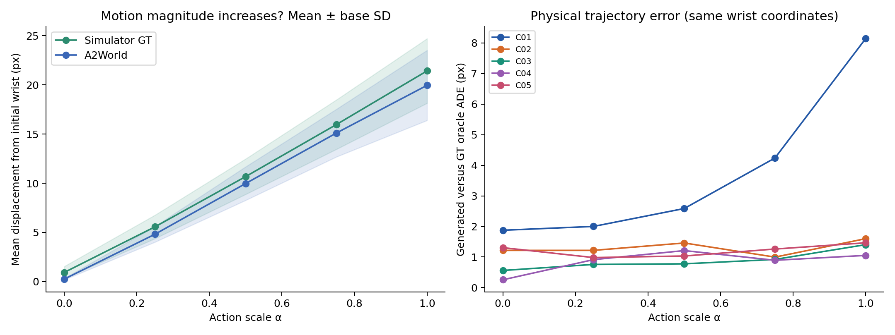
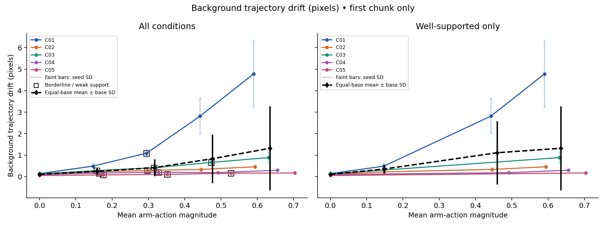
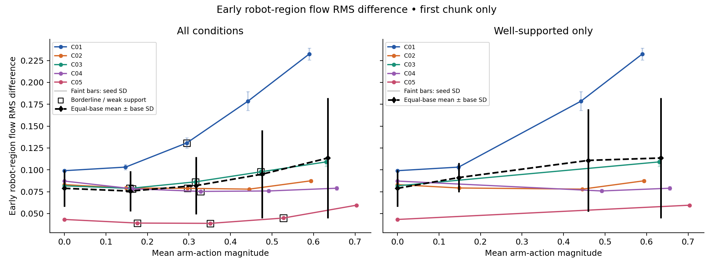
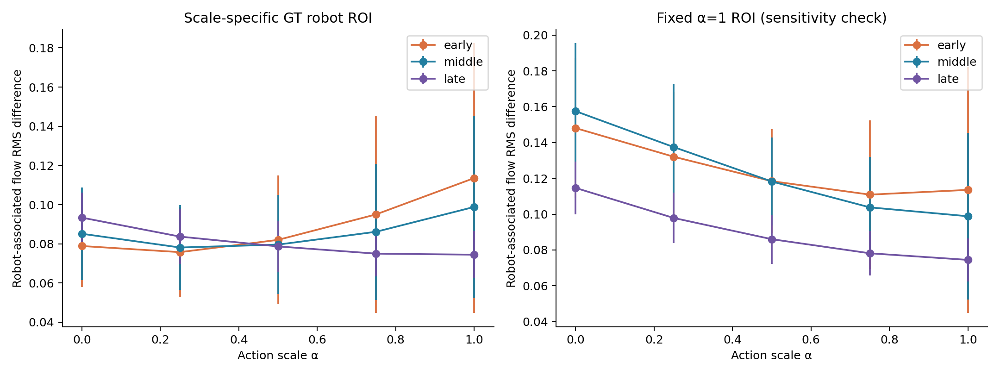
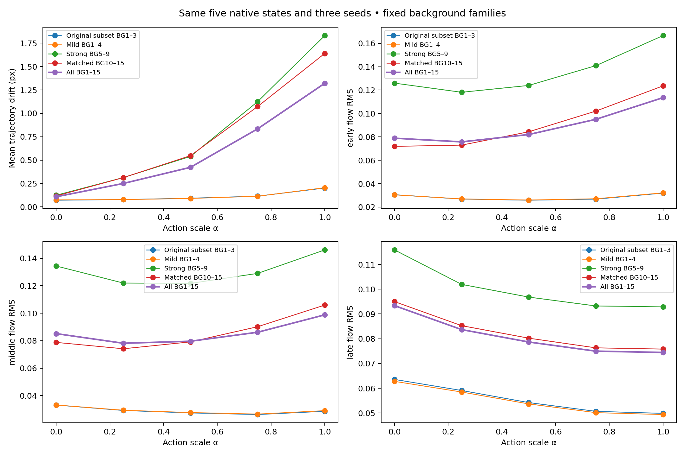
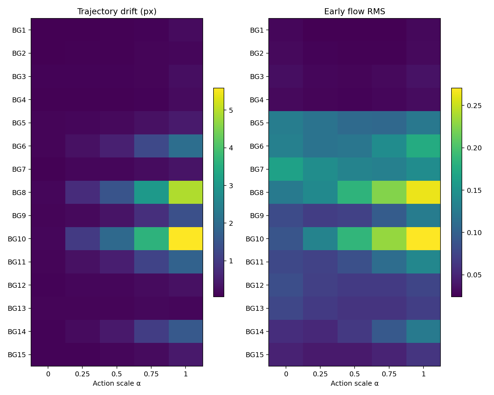
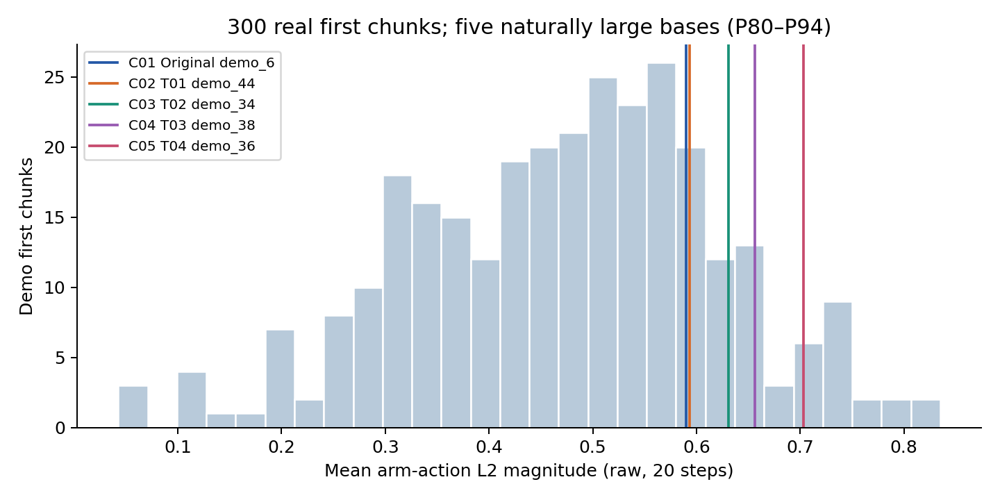
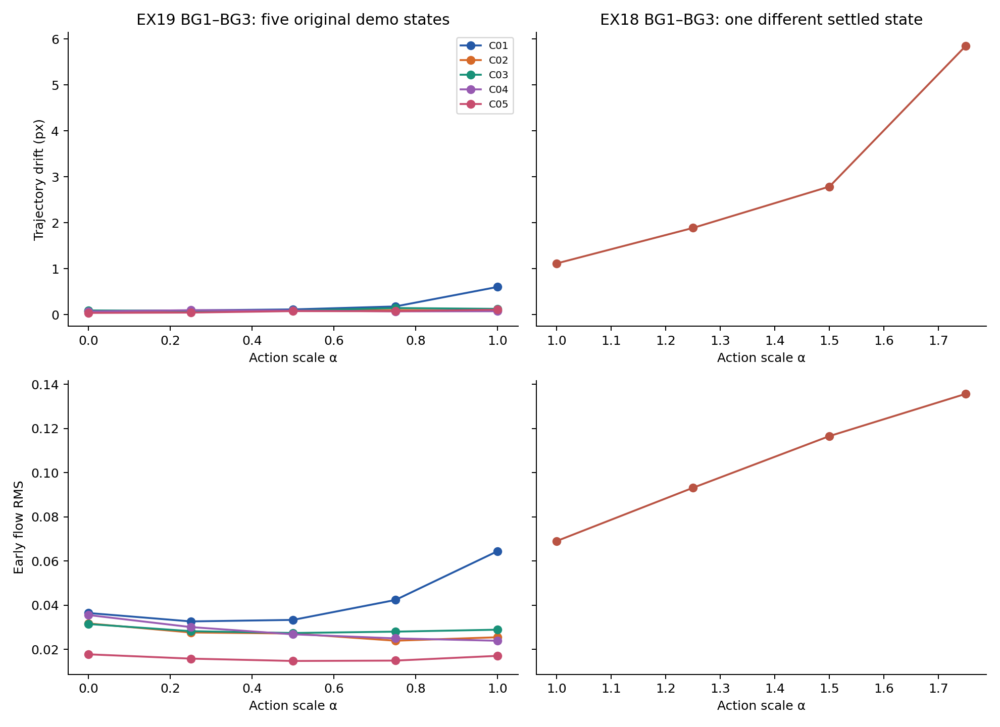
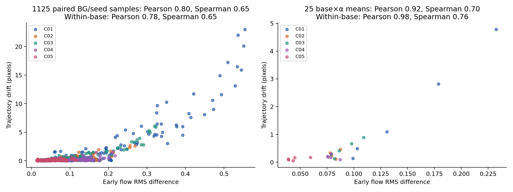

A2WORLD · EX19 · FIRST CHUNK ONLY
실제 demo 안에서도
큰 action에 더 민감할까?
5개 원본 demo state에서 arm action만 아래로 축소했습니다.
같은 action·noise에서 background가 만든 궤적 차이와 denoising flow 차이를 비교합니다.
5 bases × 5 scales × 16 backgrounds × 3 seedsα ≤ 1 · gripper 유지20 actions · history feedback 없음
핵심 결과
검증된 결과를 불러오는 중입니다.
Support는 300개 cached demo first chunk의 최근접 거리로 평가한 상대적 기준입니다. 전체 학습 분포의 IID를 보장하지 않습니다.
직접 비교
같은 state·α·seed의 GT와 BG0–BG15를 함께 재생합니다. 각 영상은 초기 frame + 20개 미래 frame입니다.
이 조건의 정확한 action 배열
GT·생성 궤적 overlay 영상 (seed 0)
얼마나 달라졌나?
Trajectory drift는 BG0와 다른 배경 사이 손목 궤적의 평균 거리(px)입니다. Flow drift는 같은 latent에서 측정한 robot-associated 영역의 RMS 차이입니다.
평균 ± 5개 base 간 SD. 각 base는 3 seeds와 15개 background 비교를 평균합니다. GT/생성 motion은 초기 위치로부터의 평균 거리입니다.
실제 움직임과 GT 오차

Action 크기와 background 민감도

오른쪽은 support가 높은 조건만 사용합니다. α별 포함 state 수가 달라질 수 있으므로 개별 state 곡선을 함께 확인합니다.


기존 배경과 전체 배경 비교


선택한 α의 배경별 수치 보기
5개 state × 3개 seed 평균. GT tracker 차이는 물리적으로 같은 궤적을 배경만 바꿔 추적했을 때의 차이입니다.
α1에서 기존 BG1–BG3는 0.201 px, 전체는 1.321 px였습니다. 강한 배경은 1.831 px, 색상 통제 배경은 1.641 px였습니다. 같은 state·action·seed를 유지한 비교입니다.
Action 분포와 support

각 숫자는 α입니다. 원본 chunk 자신은 NN 검색에서 제외했습니다. 중앙 75% 이내: well-supported · P75–P95: borderline · P95 초과: weakly supported.
이전 extrapolation과 비교

EX18은 BG1–BG3와 다른 settled state 한 개에서 action을 키운 실험입니다. 아래 비교의 EX19 곡선도 BG1–BG3로 맞췄습니다. 두 실험의 절대값 차이를 동일 state의 효과로 해석하지 않습니다.

상관은 state별 결과와 함께 해석합니다. 서로 다른 배경과 seed는 반복 측정이며, flow와 궤적의 상관만으로 인과관계를 판단하지 않습니다.
검증과 해석의 한계
α=0은 원본 state에서 arm delta만 0인 조건입니다. 원본 초기 속도와 gripper 동작이 남아 있으므로 물리적 no-op으로 간주하지 않습니다. Tracker 대조군보다 작은 차이는 로봇 동작 차이로 단정하지 않습니다. Flow와 궤적의 상관은 인과관계가 아닙니다.